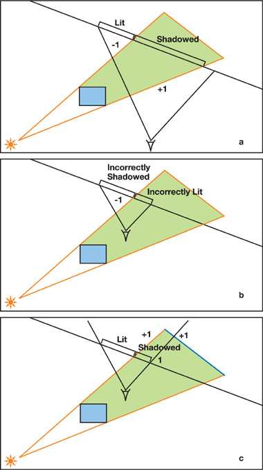
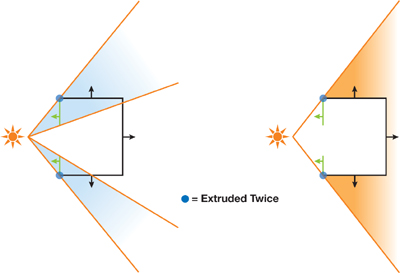
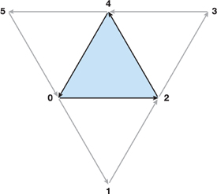
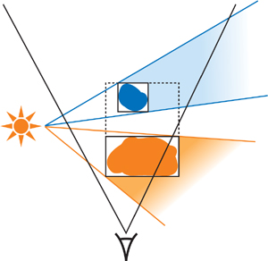

Shadow Map 和 Shadow Volume 是两种主流的阴影渲染方法。SM 可以很容易地用于实现软阴影，但会遇到走样的问题，SV 则可以以像素级别的精度渲染阴影，但无法很好地处理理想点光源和平行光以外的光源。
Shadow Volumes
SV 的主要思想如下图所示，任何处在绿色区域的受光体均不应该被照亮，因此可以以不被照亮的形式渲染所有 SV 中的几何体，SV 外的几何体则需要计算光照。对于一根从视点出射的光线，每次当其进入 SV 时减一，离开时则加一，这样可以有效地找到 SV 内的像素。

Z-Pass 和 Z-Fail
为了得到这一值，我们不必进行光线追踪，而是可以利用现代 GPU 的模板测试功能。流程如下：
- 重置模板缓存为零
- 将 SV 的边界渲染到模板缓冲中，对于正向的几何体加一，对反向的几何体减一
这一 pass 最终可以得到一个包含了相交计数的模板缓存。非零值的部分即为阴影区域。在现代 GPU 上，体渲染通常可以使用双侧模板写入的方法在单个 pass 内实现。需要注意的是，在绘制 SV 前需要先把 zbuffer 填充为场景的深度，因为这一操作迟早会被渲染，因此这样做基本不会带来负担。这一操作又被称为 z-pass 。
与之相对的 z-fail 操作被提出以解决相机恰好处在 SV 内部的情况，它交换了加减的位置并允许模板缓冲在深度测试失败时被写入以解决这一问题。与 z-pass 不同的是，这一方法需要 SV 拥有闭合的背部从而在深度测试失败时也可以正常写入模板缓冲。
生成 Volume
下列描述了一种简单的 SV 生成方法，它不支持有洞、裂缝或自遮挡的几何体，对更复杂模式的介绍见下一节。
基本步骤
生成的过程主要分为三步：
- 渲染正面（即物体本身面对光源的面片）
- 渲染后面（即 SV 的远处面）
- 渲染投影物的拉伸剪影（即 SV 的侧面）
其中远处面使用一个投影到无限大的方法渲染和正面同样的面片，而拉伸剪影则将所有受光边缘投影到无限远从而形成一组组的 quad 而实现渲染。寿光边缘可以通过比较该条边两侧的三角形对光源的朝向得到。
在无限位置渲染
在 OpenGL 中，一个被投影到了无穷远处的顶点可以通过传入一个方向而不是坐标表示，方向和坐标可以使用齐次空间坐标的最后一个维度区分，方向的最后一个维度一般是 0 而坐标是 1 。在 SV 的情况下，这个方向是光源和顶点连线的方向。但这可能导致深度值的溢出，从而在渲染中被忽略。解决这一方法可以利用 NV_depth_clamp 扩展提供的功能，或将顶点按方向投影到远平面上解决。
性能优化
对于复杂的场景，渲染 SV 本身可能造成大量的性能损失。其中一个优化在于尽量使用 z-pass 而只在必要时切换到 z-fail 上。这是因为 z-pass 通常由于无需渲染前后侧和较小的填充面积而比 z-fail 快。这两种处理方式甚至可以在同一 pass 中被同时使用。填充面积通常是 SV 的最大性能瓶颈，因此进行体剔除、使用剪切测试或深度边界限制 SV 大小等方法同样可以提供性能优化。
来自 Mental Images 的实现
本节描述了来自 Mental Images 的 RealityServer 平台中稳定的模板阴影的实现方法。
稳定的低质量 Mesh 阴影
传统上的 SV 通常被用于游戏中，在这种情况下艺术家拥有对几何体的完全控制，从而可以保证几何体的有效性。但 RealityServer 平台通常需要处理低质量的 mesh ，如不闭合、自相交等问题都可能出现。
一种修改过的阴影体生成法

在这一实现中，为了支持非闭合或者存在自相交情况的 mesh ，算法需要在以下几个方面被进一步拓展：
- 挤压没有相邻几何体的受光的边缘，这使得单面的物体同样可以投影
- 对每个 SV 边界的边缘投影两次
这种方法等效于将所有三角形分为面向光源的和背向光源的两组，接着对两组几何体分别生成 SV
性能影响
这一操作会导致前后盖和边缘的渲染需求翻倍，虽然由于场景中需要使用 z-fail 的投影物体不多因此几乎不用考虑前后盖的问题，但翻倍的边缘仍然是一个大问题。为了避免在不必要的情况使用这种生成方式，在预处理阶段将会判断几何体是否需要被这种方法特殊处理。
除此之外，还有一些本方法没有覆盖到的特殊情况，如多个几何形状共用同一条边的情况。这些特例同样会在预处理阶段被转换为可以处理的形式。
使用 GS 动态生成 SV
计算边缘点是非常复杂且需要每帧更新的过程，利用 Geometry Shader 将其移动到 GPU 端计算是有必要的。在前盖上的 GS 只需要简单地输出其接收到的输入三角形即可，而在生成边界时则需要获取相邻的三角形信息，这需要在 glBegin 中设置为 GL_TRIANGLES_ADJACENCY_EXT 模式。此时输入的三角形序列如下图所示：

接收到上述的信息后，每组输入最多会抛出 3 + 3 + 4 * 3 个顶点作为输出。以下的代码输入在摄像机 eye space 的坐标下的顶点，输出对应的 SV 面片：
1
2
3
4
5
6
7
8
9
10
11
12
13
14
15
16
17
18
19
20
21
22
23
24
25
26
27
28
29
30
31
32
33
34
35
36
37
38
39
40
41
42
43
44
45
46
47
48
49
50
51
52
53
54
55
56
57
58
59
60
61
62
63
64
65
66
67
68
69
70
71
72
73
74
75
76
77
78
79
80
81
82
83
84
85
86
87
88
89
90
91
92
93
94
95
96
97
98
99
100
101
102
103
104
105
106
107
108
109
110
111
| #version 120
#extension GL_EXT_geometry_shader4: enable
uniform vec4 l_pos;
uniform int robust;
uniform int zpass;
void main() {
vec3 ns[3];
vec3 d[3];
vec4 v[4];
vec4 or_pos[3] = {
gl_PositionIn[0],
gl_PositionIn[2],
gl_PositionIn[4]
};
ns[0] = cross(
gl_PositionIn[2].xyz - gl_PositionIn[0].xyz,
gl_PositionIn[4].xyz - gl_PositionIn[0].xyz
);
ns[1] = cross(
gl_PositionIn[4].xyz - gl_PositionIn[2].xyz,
gl_PositionIn[0].xyz - gl_PositionIn[2].xyz
);
ns[2] = cross(
gl_PositionIn[0].xyz - gl_PositionIn[4].xyz,
gl_PositionIn[2].xyz - gl_PositionIn[4].xyz
);
d[0] = l_pos.xyz-l_pos.w*gl_PositionIn[0].xyz;
d[1] = l_pos.xyz-l_pos.w*gl_PositionIn[2].xyz;
d[2] = l_pos.xyz-l_pos.w*gl_PositionIn[4].xyz;
bool faces_light = true;
if ( !(dot(ns[0],d[0])>0 || dot(ns[1],d[1])>0 || dot(ns[2],d[2])>0) ) {
if ( robust == 0 ) return;
or_pos[1] = gl_PositionIn[4];
or_pos[2] = gl_PositionIn[2];
faces_light = false;
}
if ( zpass == 0 ) {
gl_Position = gl_ProjectionMatrix*or_pos[0];
EmitVertex();
gl_Position = gl_ProjectionMatrix*or_pos[1];
EmitVertex();
gl_Position = gl_ProjectionMatrix*or_pos[2];
EmitVertex();
EndPrimitive();
v[0] =vec4(l_pos.w*or_pos[0].xyz-l_pos.xyz,0);
v[1] =vec4(l_pos.w*or_pos[2].xyz-l_pos.xyz,0);
v[2] =vec4(l_pos.w*or_pos[1].xyz-l_pos.xyz,0);
gl_Position = gl_ProjectionMatrix*v[0];
EmitVertex();
gl_Position = gl_ProjectionMatrix*v[1];
EmitVertex();
gl_Position = gl_ProjectionMatrix*v[2];
EmitVertex();
EndPrimitive();
}
for ( int i=0; i<3; i++ ) {
int v0 = i*2;
int nb = (i*2+1);
int v1 = (i*2+2) % 6;
ns[0] = cross(
gl_PositionIn[nb].xyz-gl_PositionIn[v0].xyz,
gl_PositionIn[v1].xyz-gl_PositionIn[v0].xyz
);
ns[1] = cross(
gl_PositionIn[v1].xyz-gl_PositionIn[nb].xyz,
gl_PositionIn[v0].xyz-gl_PositionIn[nb].xyz
);
ns[2] = cross(
gl_PositionIn[v0].xyz-gl_PositionIn[v1].xyz,
gl_PositionIn[nb].xyz-gl_PositionIn[v1].xyz
);
d[0] =l_pos.xyz-l_pos.w*gl_PositionIn[v0].xyz;
d[1] =l_pos.xyz-l_pos.w*gl_PositionIn[nb].xyz;
d[2] =l_pos.xyz-l_pos.w*gl_PositionIn[v1].xyz;
if ( gl_PositionIn[nb].w < 1e-3 ||
(faces_light != (dot(ns[0],d[0])>0 || dot(ns[1],d[1])>0 || dot(ns[2],d[2])>0) )
) {
int i0 = faces_light ? v0 : v1;
int i1 = faces_light ? v1 : v0;
v[0] = gl_PositionIn[i0];
v[1] = vec4(l_pos.w*gl_PositionIn[i0].xyz - l_pos.xyz, 0);
v[2] = gl_PositionIn[i1];
v[3] = vec4(l_pos.w*gl_PositionIn[i1].xyz - l_pos.xyz, 0);
gl_Position = gl_ProjectionMatrix*v[0];
EmitVertex();
gl_Position = gl_ProjectionMatrix*v[1];
EmitVertex();
gl_Position = gl_ProjectionMatrix*v[2];
EmitVertex();
gl_Position = gl_ProjectionMatrix*v[3];
EmitVertex();
EndPrimitive();
}
}
}
|
需要注意的是，为了使得退化的三角形在处理中被正确地剔除，上述的代码中会计算所有顶点位置处的法线以避免由于顶点选择次序造成的不一致。
使用层次遮挡剔除（Hierarchical Occlusion Culling）提高效率
对于大场景而言，将所有物体组织在一个层次加速结构中进行剔除可以有效提高效率，其中最简单快速的方法是 BVH 。实现 BVH 节点和视椎体的求交并不复杂，只需要使用视椎体对应的变换矩阵「渲染」一遍节点的 AABB 即可。
对 BVH 结构的遍历需要引入异步操作和时间同步的方法以减少开销。由于需要从 GPU 进行查询，会引入额外的通信时间，通常需要异步地同时查询多个节点以减少时间浪费在等待上。一般而言，上一帧中的遮挡信息可以提供一个有效的查询指引。
这种剔除方式的作用如下图所示：

由于第二个投影物的 SV 被前者本身完全遮挡了，后方的投影物无法投下任何可视的阴影，从而可以被安全地剔除出 SV 计算中。这实际上是在对投影物的 AABB 做简单的投影以进行剔除操作。
最终，当加速结构遍历到了一个叶子节点时，节点中的几何体将会被用于投影下完整的 SV 。
上述提到的裁剪方式无法在所有情况下都提供性能提升。对于较为简单的场景而言，使用这一方法甚至会导致性能的下降。一般而言，这种方法对于越大的场景效果就能越好。